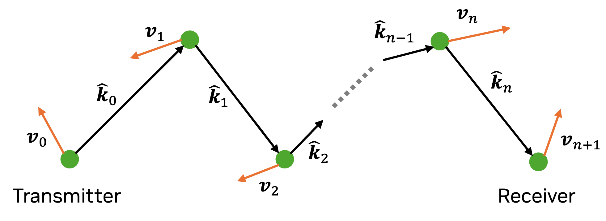

Paths#
A propagation path \(i\) starts at a transmit antenna and ends at a receive antenna. It is described by its channel coefficient \(a_i\) and delay \(\tau_i\), as well as the angles of departure \((\theta_{\text{T},i}, \varphi_{\text{T},i})\) and arrival \((\theta_{\text{R},i}, \varphi_{\text{R},i})\). For more detail, see the Primer on Electromagnetics.
In Sionna, paths are computed with the help of a path solver (such as PathSolver)
which returns an instance of Paths.
Paths can be visualized by providing them as arguments to the functions render(),
render_to_file(), or preview().
Channel impulse responses (CIRs) can be obtained with cir() which can
then be used for link-level simulations. This is for example done in the Sionna Ray Tracing Tutorial.
- class sionna.rt.Paths[source]#
Stores the simulated propagation paths
Paths are generated for the loaded scene using a path solver, such as
PathSolver. Please refer to the documentation of this class for further details.- Parameters:
scene (sionna.rt.scene.Scene) – Scene for which paths are computed
src_positions (mitsuba.Point3f) – Positions of the sources
tgt_positions (mitsuba.Point3f) – Positions of the targets
tx_velocities (mitsuba.Vector3f) – Velocities of the transmitters
rx_velocities (mitsuba.Vector3f) – Velocities of the receivers
synthetic_array (bool) – If set to True, then the antenna arrays are applied synthetically
paths_buffer (sionna.rt.path_solvers.paths_buffer.PathsBuffer) – Paths buffer storing the computed paths
rel_ant_positions_tx (mitsuba.Point3f | None) – Positions of the array elements with respect to the center of the transmitters. Only required if synthetic arrays are used.
rel_ant_positions_rx (mitsuba.Point3f | None) – Positions of the array elements with respect to the center of the receivers. Only required if synthetic arrays are used.
Methods
- cfr(frequencies: drjit.llvm.ad.Float, sampling_frequency: float = 1.0, num_time_steps: int = 1, normalize_delays: bool = True, normalize: bool = False, reverse_direction: bool = False, out_type: Literal['drjit', 'jax', 'numpy', 'tf', 'torch'] = 'drjit')[source]#
Compute the frequency response of the channel at
frequencies. Optionally, time evolution of the channel can be simulated based on the Doppler shifts of all paths.Given a channel impulse response \((a_i^\text{b}(t), \tau_{i}), 0 \leq i \leq M-1\), as computed by
cir(), the channel frequency response for the frequency \(f\) is computed as follows:\[\widehat{h}(f, t) = \sum_{i=0}^{M-1}a_i^\text{b}(t) e^{-j2\pi f \tau_{i}}\]The time evolution of the channel is simulated as described in the documentation of
cir().- Parameters:
frequencies (drjit.llvm.ad.Float) – Frequencies [Hz] at which to compute the channel response
sampling_frequency (float) – Frequency [Hz] at which the channel impulse response is sampled
num_time_steps (int) – Number of time steps
normalize_delays (bool) – If set to True, path delays are normalized such that the first path between any pair of antennas of a transmitter and receiver arrives at \(\tau = 0\).
normalize (bool) – If set to True, the channel is normalized across time and frequencies to ensure unit average energy.
reverse_direction (bool) – If set to True, swaps receivers and transmitters
out_type (Literal['drjit', 'jax', 'numpy', 'tf', 'torch']) – Name of the desired output type. Currently supported are Dr.Jit (“drjit), Numpy (“numpy”), Jax (“jax”), TensorFlow (“tf”), and PyTorch (“torch”).
- Returns:
Real and imaginary components of the baseband equivalent channel coefficients \(a^{\text{b}}_{i}\)
- cir(*, sampling_frequency: float = 1.0, num_time_steps: int = 1, normalize_delays: bool = True, reverse_direction: bool = False, out_type: Literal['drjit', 'jax', 'numpy', 'tf', 'torch'] = 'drjit')[source]#
Returns the baseband-equivalent channel impulse response (28) which can be used for link simulations by other Sionna components. Optionally, time evolution of the channel can be simulated based on the Doppler shifts of all paths.
The baseband equivalent channel coefficient \(a^{\text{b}}_{i}(t)\) at time \(t\) is computed as :
\[a^{\text{b}}_{i}(t) = \underbrace{a_{i} e^{-j2 \pi f \tau_{i}}}_{a^{\text{b}}_{i} } \underbrace{e^{j 2\pi f_{\Delta, i} t}}_{\text{Doppler phase shift}}\]where \(i\) is the index of an arbitrary path, \(a_{i}\) is the passband path coefficient (
a), \(\tau_{i}\) is the path delay (tau), \(f\) is the carrier frequency, and \(f_{\Delta, i}\) is the Doppler shift of the \(i\text{th}\) path.- Parameters:
sampling_frequency (float) – Frequency [Hz] at which the channel impulse response is sampled
num_time_steps (int) – Number of time steps
normalize_delays (bool) – If set to True, path delays are normalized such that the first path between any pair of antennas of a transmitter and receiver arrives at \(\tau = 0\)
reverse_direction (bool) – If set to True, swaps receivers and transmitters
out_type (Literal['drjit', 'jax', 'numpy', 'tf', 'torch']) –
Name of the desired output type. Currently supported are Dr.Jit (“drjit), Numpy (“numpy”), Jax (“jax”), TensorFlow (“tf”), and PyTorch (“torch”).
- Returns:
Real and imaginary components of the baseband equivalent channel coefficients \(a^{\text{b}}_{i}\)
- Returns:
Paths delays \(\tau_{i}\) [s]
- taps(bandwidth: float, l_min: int, l_max: int, sampling_frequency: float | None = None, num_time_steps: int = 1, normalize: bool = False, normalize_delays: bool = True, reverse_direction: bool = False, out_type: Literal['drjit', 'jax', 'numpy', 'tf', 'torch'] = 'drjit')[source]#
Returns the channel taps forming the discrete complex baseband-equivalent channel impulse response
This function assumes that a sinc filter is used for pulse shaping and receive filtering. Therefore, given a channel impulse response \((a_{i}^\text{b}(t), \tau_{i}), 0 \leq i \leq M-1\) (which can be computed by
cir()), the \(\ell\text{th}\) channel tap at sample instance \(n\) is computed as follows (see (Eq. 2.34) [Tse_RT]):\[\bar{h}_{n, \ell} = \sum_{i=0}^{M-1} a_{i}^\text{b}\left(\frac{n}{W}\right) \text{sinc}\left( \ell - W\tau_{i} \right)\]for \(\ell\) ranging from
l_mintol_max, and where \(W\) is thebandwidth.This function allows for an arbitrary
sampling_frequencyat which the channel taps are sampled. By default, it is equal to thebandwidth.- Parameters:
bandwidth (float) – Bandwidth [Hz] to which the channel impulse response will be limited
l_min (int) – Smallest time-lag for the discrete complex baseband-equivalent channel (\(L_{\text{min}}\))
l_max (int) – Largest time-lag for the discrete complex baseband-equivalent channel (\(L_{\text{max}}\))
sampling_frequency (float | None) – Frequency [Hz] at which the channel impulse response is sampled. If set to None, the
bandwidthis used instead.num_time_steps (int) – Number of time steps
normalize (bool) – If set to True, the channel is normalized such that the average total energy of the channel taps is equal to one.
normalize_delays (bool) – If set to True, path delays are normalized such that the first path between any pair of antennas of a transmitter and receiver arrives at \(\tau = 0\).
reverse_direction (bool) – If set to True, swaps receivers and transmitters
out_type (Literal['drjit', 'jax', 'numpy', 'tf', 'torch']) –
Name of the desired output type. Currently supported are Dr.Jit (“drjit), Numpy (“numpy”), Jax (“jax”), TensorFlow (“tf”), and PyTorch (“torch”).
- Returns:
Channel tap coefficients
Attributes
- property a#
Real and imaginary components of the channel coefficients [unitless, linear scale]
- Type:
Tuple[mi.TensorXf [num_rx, num_rx_ant, num_tx, num_tx_ant, num_paths], mi.TensorXf [num_rx, num_rx_ant, num_tx, num_tx_ant, num_paths]]
- property doppler#
Doppler shift for each path
To understand how Doppler shifts are computed, let us consider a single propagation path undergoing \(n\) scattering processes, e.g., reflection, diffuse scattering, refraction, as shown in the figure below.

The object on which lies the \(i\text{th}\) scattering point has the velocity vector \(\hat{\mathbf{v}}_i\) and the outgoing ray direction at this point is denoted \(\hat{\mathbf{k}}_i\). The first and last point correspond to the transmitter and receiver, respectively. We therefore have
\[\begin{split}\hat{\mathbf{k}}_0 &= \hat{\mathbf{r}}(\theta_{\text{T}}, \varphi_{\text{T}})\\ \hat{\mathbf{k}}_{n} &= -\hat{\mathbf{r}}(\theta_{\text{R}}, \varphi_{\text{R}})\end{split}\]where \((\theta_{\text{T}}, \varphi_{\text{T}})\) are the AoDs, \((\theta_{\text{R}}, \varphi_{\text{R}})\) are the AoAs, and \(\hat{\mathbf{r}}(\theta,\varphi)\) is defined in (1).
If the transmitter emits a signal with frequency \(f\), the receiver will observe the signal at frequency \(f'=f + f_\Delta\), where \(f_\Delta\) is the Doppler shift, which can be computed as [Wiffen2018]
\[f' = f \prod_{i=0}^n \frac{1 - \frac{\mathbf{v}_{i+1}^\mathsf{T}\hat{\mathbf{k}}_i}{c}}{1 - \frac{\mathbf{v}_{i}^\mathsf{T}\hat{\mathbf{k}}_i}{c}}.\]Under the assumption that \(\lVert \mathbf{v}_i \rVert\ll c\), we can apply the Taylor expansion \((1-x)^{-1}\approx 1+x\), for \(x\ll 1\), to the previous equation to obtain
\[\begin{split}f' &\approx f \prod_{i=0}^n \left(1 - \frac{\mathbf{v}_{i+1}^\mathsf{T}\hat{\mathbf{k}}_i}{c}\right)\left(1 + \frac{\mathbf{v}_{i}^\mathsf{T}\hat{\mathbf{k}}_i}{c}\right)\\ &\approx f \left(1 + \sum_{i=0}^n \frac{\mathbf{v}_{i}^\mathsf{T}\hat{\mathbf{k}}_i -\mathbf{v}_{i+1}^\mathsf{T}\hat{\mathbf{k}}_i}{c} \right)\end{split}\]where the second line results from ignoring terms in \(c^{-2}\). Solving for \(f_\Delta\), grouping terms with the same \(\mathbf{v}_i\) together, and using \(f=c/\lambda\), we obtain
\[f_\Delta = \frac{1}{\lambda}\left(\mathbf{v}_{0}^\mathsf{T}\hat{\mathbf{k}}_0 - \mathbf{v}_{n+1}^\mathsf{T}\hat{\mathbf{k}}_n + \sum_{i=1}^n \mathbf{v}_{i}^\mathsf{T}\left(\hat{\mathbf{k}}_i-\hat{\mathbf{k}}_{i-1} \right) \right) \qquad \text{[Hz]}.\]
- property interactions#
Interaction type represented using
InteractionType
- property objects#
IDs of the intersected objects. Invalid objects are represented by
INVALID_SHAPE.
- property phi_r#
Azimuth angles of arrival [rad]
- property phi_t#
Azimuth angles of departure [rad]
- property primitives#
Indices of the intersected primitives. Invalid primitives are represented by
INVALID_PRIMITIVE.
- property rx_array#
Antenna array used by receivers
- Type:
- property sources#
Positions of the paths sources. If synthetic arrays are not used (
synthetic_arrayis False), then every transmit antenna is modeled as a source of paths. Otherwise, transmitters are modelled as if they had a single antenna located at theirposition. The channel responses for each individual antenna of the arrays are then computed “synthetically” by applying appropriate phase shifts.- Type:
- property synthetic_array#
Flag indicating if synthetic arrays were used to trace the paths
- Type:
- property targets#
Positions of the paths targets. If synthetic arrays are not used (
synthetic_arrayis False), then every receiver antenna is modeled as a source of paths. Otherwise, receivers are modelled as if they had a single antenna located at theirposition. The channel responses for each individual antenna of the arrays are then computed “synthetically” by applying appropriate phase shifts.- Type:
- property tau#
Paths delays [s]
- property theta_r#
Zenith angles of arrival [rad]
- property theta_t#
Zenith angles of departure [rad]
- property tx_array#
Antenna array used by transmitters
- Type:
- property valid#
Flags indicating valid paths
- property vertices#
Paths’ vertices, i.e., the interaction points of the paths with the scene
Constants#
- class sionna.rt.constants.InteractionType[source]#
Constants representing the type of interaction
Attributes
- DIFFRACTION = 8#
Diffraction
- DIFFUSE = 2#
Diffuse reflection
- NONE = 0#
No interaction
- REFRACTION = 4#
Refraction
- SPECULAR = 1#
Specular reflection
- sionna.rt.constants.INVALID_SHAPE = np.uint32(4294967295)#
Constant representing an invalid shape
- sionna.rt.constants.INVALID_PRIMITIVE = np.uint32(4294967295)#
Constant representing an invalid primitive